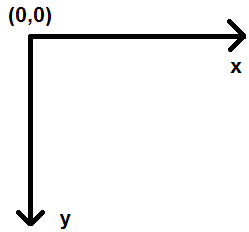
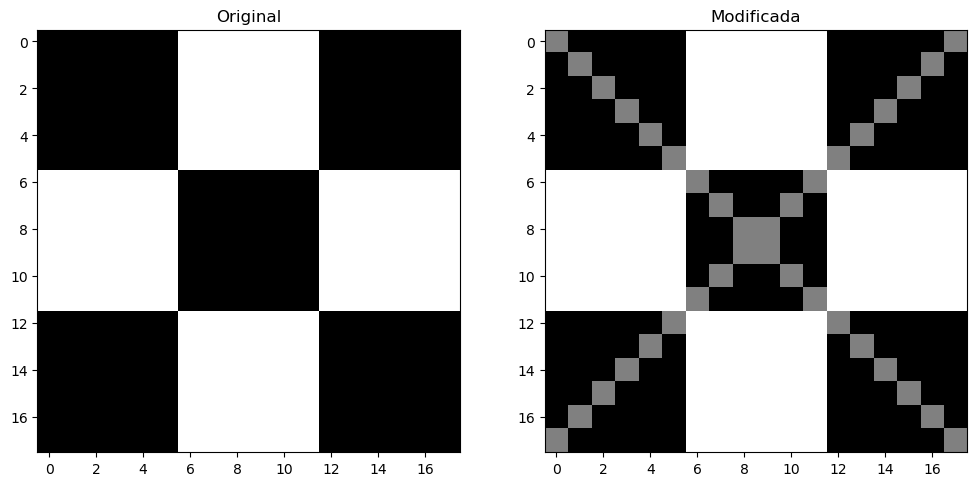

1. Computer Vision
1. Introducció a OpenCV i PIL (Python Imaging Library):
OpenCV (Open Source Computer Vision) i PIL (Python Imaging Library) són dues potents llibreries de processament d'imatges en Python que ofereixen funcionalitats complementàries per a l'anàlisi, la manipulació i la millora d'imatges. Aquestes eines són essencials en diverses aplicacions, des del desenvolupament d'algoritmes de visió per computadora fins a la creació d'eines de processament d'imatges en projectes d'intel·ligència artificial.
OpenCV
OpenCV és una llibreria de visió per computadora de codi obert, proporciona una àmplia varietat de funcions per al processament d'imatges i vídeo. Amb suport per a múltiples plataformes i llenguatges de programació, OpenCV facilita tasques com la detecció d'objectes, el seguiment de moviments, el reconeixement facial i la calibració de càmeres. La seva flexibilitat i eficiència fan que sigui una elecció popular en el desenvolupament d'aplicacions relacionades amb la visió per computadora.
PIL
PIL, també coneguda com a Pillow, és una llibreria que ofereix eines robustes per a la manipulació d'imatges a Python. Tot i que ha estat substituïda per Pillow en termes de desenvolupament actiu, PIL encara es menciona pel seu llegat. Pillow manté la compatibilitat amb el codi PIL existent i afegeix noves característiques. Aquesta llibreria és ideal per a operacions bàsiques com obrir, manipular i desar imatges en diversos formats.
Instal·lar Pillow
| Bash | |
|---|---|
Documentació completa a https://pillow.readthedocs.io/en/latest/handbook/index.html
Combinant OpenCV i PIL:
La combinació d'OpenCV i PIL aprofita el millor de totes dues llibreries. OpenCV ofereix algoritmes avançats i tècniques de visió per computadora, mentre que PIL proporciona funcions addicionals per al processament bàsic i la manipulació eficient d'imatges. La integració d'aquestes dues eines permet als desenvolupadors abordar una àmplia gamma de reptes en el processament d'imatges, des de tasques senzilles fins a projectes més complexos que requereixen funcions especialitzades.
En aquest apartat, exploraràs com aprofitar de manera sinèrgica OpenCV i PIL per a maximitzar la teva capacitat per treballar amb imatges a Python, obtenint així una base sòlida per abordar projectes relacionats amb el processament d'imatges i la intel·ligència artificial.
Primer, aprendràs el següent:
- Llegir una imatge
- Comprovar els atributs de la imatge com ara el tipus de dades i la forma
- Representació de matriu d'una imatge en
Numpy - Imatges en color i separació/fusió de canals d'imatge
- Mostrar imatges utilitzant
matplotlib - Desar imatges
2. Operacions basiques amb imatges
2.1. Obrint la imatge
OpenCV permet llegir diferents tipus d'imatges (JPG, PNG, etc). Pots carregar imatges en escala de grisos, imatges en color o també pots carregar imatges amb canal Alpha. Utilitza la funció cv2.imread() que té la següent sintaxi img = cv2.imread(filename[,flags] ), on:
img: És la imatge si es carrega amb èxit. En cas contrari, ésNone. Això pot succeir si el nom del fitxer és incorrecte o si el fitxer està corrupte.filename: Pot ser una ruta absoluta o relativa. Aquest és un argument obligatori.-
flags: Aquestes banderes s'utilitzen per llegir una imatge en un format particular (per exemple, escala de grisos/color/amb canal alfa). Aquest és un argument opcional amb un valor per defecte decv2.IMREAD_COLORo1, que carrega la imatge com a imatge en color. Algunes de lesflagsdisponibles:cv2.IMREAD_GRAYSCALE: Carrega la imatge en mode d'escala de grisos.cv2.IMREAD_COLOR: Carrega una imatge en color. Qualsevol transparència de la imatge serà ignorada. És la bandera per defecte.cv2.IMREAD_UNCHANGED: Carrega la imatge tal com és, incloent el canal alfa.
2.2. Mostrant atributs
Analitza el següent bloc de codi:
Mostrant la imatge
Les ixides seran algo com:


Si la imatge llegida és en color, això ens crearà un array de numpy tridimensional, on cada píxel és una combinació de 3 canals RGB
Separant els canal de la imatge
Quedant el resultat com segueix:
2.3. Espais de colors
La funció cv2.cvtColor() Converteix una imatge d'un espai de colors a un altre. La funció converteix una imatge d'un espai de colors d'entrada a un altre. En cas d'una transformació des-de l'espai de colors RGB, l'ordre dels canals s'ha d'especificar explícitament (RGB o BGR).
Cal tenir en compte que el format de color per defecte a OpenCV sovint es denomina RGB, però en realitat és BGR (els bytes estan invertits). Per tant, el primer byte en una imatge de color estàndard (de 24 bits) serà un component Blau de 8 bits, el segon byte serà Verd i el tercer byte serà Vermell. El quart, cinquè i sisè bytes serien llavors el segon píxel (Blau, després Verd, després Vermell), i així successivament.
dst = cv2.cvtColor(src,code) on:
dst: És la imatge de sortida amb la mateixa mida i profunditat quesrc.src: Imatge d'entradacode: Codi de conversió de l'espai de colors (vegeu ColorConversionCodes).
2.4. Guardant imatges
Guardar la imatge és tan senzill com llegir una imatge a OpenCV. Utilitzem la funció cv2.imwrite() amb dos arguments. El primer és el nom del fitxer i el segon és l'objecte imatge.
La funció imwrite guarda la imatge al fitxer especificat. El format de la imatge es tria en funció de l'extensió del nom del fitxer. En general, només es poden guardar imatges de 8 bits de canal únic o de 3 canals (amb ordre de canals 'BGR') utilitzant aquesta funció
La funció és cv2.imwrite( filename, img[, params] ), on:
filename: és el nom del fitxer amb l'extensióimg: és la imatge que tenim carregada en memòria
3. Manipulació bàsica imatges
3.1. Accedint a píxels individuals
Veurem com accedir a un píxel de la imatge. Donat que al carregar la imatge, és una matriu numpy, has d'utilitzar la notació de matriu com img[f,c], on f és el número de fila i c és el número de columna. També cal tenir en compte que la matriu comença a l'índex 0.
Per exemple, si vols accedir al primer píxel, has de especificar img[0,0], però:
- si la imatge és en escala de grisos, tindràs un valor enter entre 0 i 255
- si la imatge és en color, tindràs un array de 3 valors entre 0 i 255, amb els valors BGR.
Atenció: coordenades

Vigila que cada llibreria pot diferir com avalua les coordenades. En openCV el punt (0,0) és el de dalt a l'esquerre i:
- Les x van cap a la dreta
- Les y van cap a baix
Dibuixem diagonals

3.2. Retallant (crop)
El fet de retallar una imatge no és me seleccionar una porció de la mateixa. Donat que una imatge és una matriu Numpy, ho farem amb els rangs de selecció d'imatges, és a dir l'operador dos punt.
Seleccionem el barco

Divideix una imatge en 4 porcions, 2 dalt i dos baix
3.3. Canviant les dimensions
La funció resize redimensiona la imatge src cap avall o cap amunt fins a la mida especificada. La mida i el tipus es deriven de src, dsize, fx i fy.
La sintaxi és dst = resize( src, dsize[, dst[, fx[, fy[, interpolation]]]] ), on:
dst: imatge de sortida; té la midadsize(quan és diferent de zero) o la mida calculada a partir desrc.size(),fxify.src: imatge d'entradadsize: mida de la imatge de sortida-
Opcionalment:
-
fx: factor d'escala a l'eix horitzontal; quan és igual a 0, es calcula com(𝚍𝚘𝚞𝚋𝚕𝚎)𝚜𝚒𝚣𝚎.𝚠𝚒𝚍𝚝𝚑/𝚜𝚛𝚌.𝚌𝚘𝚕𝚜 fy: factor d'escala a l'eix vertical; quan és igual a 0, es calcula com(𝚍𝚘𝚞𝚋𝚕𝚎)𝚍𝚜𝚒𝚣𝚎.𝚑𝚎𝚒𝚐𝚑𝚝/𝚜𝚛𝚌.𝚛𝚘𝚠𝚜
Reescalem una imatge

3.4. Rotacions
La funció flip inverteix l'array de tres maneres diferents (els índexs de files i columnes comencen per 0). La sintaxi és dst = cv.flip(src, flipCode):
-
dst: array de sortida amb la mateixa mida i tipus que src. Els arguments són:src: imatge d'entradaflipCode: un indicador per especificar com voltejar l'array:- Un valor de 0 significa voltejar al voltant de l'eix
x - Un valor positiu (per exemple, 1) significa voltejar al voltant de l'eix
y. - Un valor negatiu (per exemple, -1) significa voltejar al voltant dels dos eixos.
Basicament hem d'entendre el flip o rotació com l'invertir la imatge com un espill. És l'efecte que ha de solventar-se quan fem una foto selfie.
Diverses rotacions

4. Anotant imatges
Una de les operacions que mes farem és el ressaltar parts de les imatges. Afegir algun text, enquadrar una cara, encerclar un objecte son tasques habituals a fer.
4.1. Línies
Comencem dibuixant una línia en una imatge. Utilitzarem la funció cv2.line per a això, la sintaxi de la qual és img_out = cv2.line(img_in, pt1, pt2, color[, thickness[, lineType[, shift]]]), on:
-
img_out: La imatge de sortida que contindrà l'anotació, i com a paràmetres: -
img_in: Imatge en la qual dibuixarem una línia. pt1: Primer punt, ubicació (x, y) del segment de línia.pt2: Segon punt del segment de línia.color: Color de la línia que es dibuixarà.thickness: Enter que especifica l'amplada de la línia. El valor per defecte és 1.lineType: Tipus de línia. El valor per defecte és 8, que representa una línia de 8 connexions. Normalment, s'utilitza cv2.LINE_AA (línia antialiasing o suau) per al lineType.
Més informació a la web oficial.
4.2. Cercles
Utilitzarem la funció cv2.circle per a això. La sintaxi és img_out = cv2.circle(img_in, center, radius, color[, thickness[, lineType[, shift]]]), on:
-
img_out: La imatge de sortida que ha estat anotada, i els arguments són: -
img_in: Imatge en la qual dibuixarem un cercle. center: Centre del cercle(x, y).radius: Radi del cercle.color: Color del cercle que es dibuixarà.thickness: Gruix del contorn del cercle (si és positiu). Si s'indica un valor negatiu per a aquest argument, es dibuixarà un cercle ple.lineType: Tipus de línia del contorn del cercle.
4.3. Rectangles
Utilitzarem la funció cv2.rectangle per dibuixar un rectangle en una imatge. La sintaxi de la funció és la següent img_out = cv2.rectangle(img_in, pt1, pt2, color[, thickness[, lineType[, shift]]]) on:
-
img_out: La imatge de sortida que ha estat anotada. -
img_in: Imatge en la qual es dibuixarà el rectangle. -
pt1: Vèrtex del rectangle. Normalment, utilitzem el vèrtex superior esquerra aquí. pt2: Vèrtex del rectangle oposat apt1. Normalment, utilitzem el vèrtex inferior dret aquí.color: Color del rectangle.thickness: Gruix del contorn del rectangle (si és positiu). Si s'indica un valor negatiu per a aquest argument, es dibuixarà un rectangle ple.lineType: Tipus de línia del contorn del rectangle. És el mateix argument lineType que s'utilitza en cv2.line.
4.4. Texts
Finalment, veurem com podem escriure text en una imatge utilitzant la funció cv2.putText. La sintaxi és img_out = cv2.putText(img_in, text, org, fontFace, fontScale, color[, thickness[, lineType[, bottomLeftOrigin]]]), on:
img_out: La imatge de sortida que ha estat anotada.img_in: Imatge en la qual s'ha d'escriure el text.text: Cadena de text a escriure.org: Cantó inferior esquerra de la cadena de text a la imatge, com una tupla(x,y)fontFace: Tipus de font. Consultar la documentació per veure els tipus vàlids (cv2.FONT_)fontScale: Factor d'escala de la font que es multiplica per la mida base específica de la font.color: Color de la font.
Exercici Pintem sobre la imatge
Sobre la imatge a continuació (el enlariament de l'Apol·lo XI):

Aplícla-li:
- Un títol a la part de baix, amb el text que consideres
- Un requadre que tanque el cohet
- Una cercle que tanque un objecte extrany a la dreta del cohet
- Una línia horizontal de banda a banda de la imatgeque coincidisca amb la punta del cohet.
Deurà quedar alguna cosa similar a:

Sol·lució
5. Aplicant filtres
Els filtres a les imatges poden resultar interessant per diversos motius, ja no sols el retoc fotogràfic, sinò per exemple l'augmentació de datasets i la recerca de punts singulars a les imatges.
5.1. Suma per modifcar la brillantor (brigthness)
La primera operació que discutim és la simple suma d'imatges. Això resulta en augmentar o disminuir la brillantor de la imatge ja que finalment estem augmentant o disminuint els valors d'intensitat de cada píxel en la mateixa quantitat. Això donarà com a resultat un augment/disminució global de la brillantor.
Recorda que com una imatge és un numpy array, podem sumar matrius de manera molt simple, com veurem a continuació:
Modificant la llum de la imatge

5.2. Multipliquem per modificar el contrast
Just com l'addició pot resultar en un canvi de brillantor, la multiplicació es pot utilitzar per millorar el contrast de la imatge.
El contrast és la diferència en els valors d'intensitat dels píxels d'una imatge. Multiplicar els valors d'intensitat per una constant pot fer que la diferència sigui més gran o més petita (si el factor de multiplicació és < 1).
Modifiquem el contrast

Podeu veure els colors estranys en algunes àrees de la imatge després de la multiplicació?
El problema és que després de la multiplicació, els valors que ja són alts es tornen més grans que 255. Això provoca un problema de desbordament. Com ho podem evitar?
Solució amb np.clip()
Amb la funció np.clip() de numpy, ens permeta ajustar qualssevol valor per baix o dalt de dos donats a els valors indicats, sobretot al multiplicar.
5.3. Umbralització d'imatges
Les imatges binàries (imatges en blanc i negre) tenen molts casos d'ús en el processament d'imatges. Un dels casos d'ús més comuns és la creació de màscares o detecció de vores.
Les màscares d'imatges ens permeten processar parts específiques d'una imatge mantenint les altres parts intactes. La umbralització d'imatges s'utilitza per crear imatges binàries a partir d'imatges en escala de grisos. Podeu utilitzar diferents valors de llindar per crear diferents imatges binàries a partir de la mateixa imatge original.
La sintaxi és retval, dst = cv2.threshold(src, thresh, maxval, type[, dst]), on:
dst: L'array de sortida del mateix tamany i tipus i el mateix nombre de canals quesrc.src: array d'entrada (de múltiples canals, de 8 bits o de punt flotant de 32 bits).thresh: valor de llindar. És el límit a partir del qual els píxels es convertiran en un valor específic, determinat pel paràmetre type, normalment o 0 o 1.maxval: valor màxim a utilitzar amb els tipus de umbralitzacióTHRESH_BINARYiTHRESH_BINARY_INV.type: És el tipus d'operació de thresholding que es vol aplicar. Pots utilitzar els següents valors:cv2.THRESH_BINARY: Si el valor del píxel és més gran que el valor de threshold, es posa al valormaxval; si no, es posa a 0.cv2.THRESH_BINARY_INV: És al contrari decv2.THRESH_BINARY. Si el valor del píxel és més gran que el valor de threshold, es posa a 0; si no, es posa amaxval.cv2.THRESH_TRUNC: Tots els valors més grans que el valor de threshold es posen iguals al valor de threshold.cv2.THRESH_TOZERO: Tots els valors més petits que el valor de threshold es posen a 0.cv2.THRESH_TOZERO_INV: És al contrari decv2.THRESH_TOZERO. Tots els valors més grans que el valor de threshold es posen a 0.
D'altra banda tenim la funció d'una umbralització adaptativa, que té l'avantatge d'adaptar-se localment als canvis de la intensitat de la imatge. En lloc d'utilitzar un únic valor de threshold per a tota la imatge, l'adaptació s'ajusta en funció de petites regions de la imatge, permetent detectar els umbrals de manera disinta segons la part de la imatge en la que estem.
La sintaxi és bastant semblant dst = cv.adaptiveThreshold(src, maxValue, adaptiveMethod, thresholdType, blockSize, C[, dst]), on:
dst: Imatge de destinació del mateix tamany i tipus quesrc.src: Imatge d'origen de 8 bits i un sol canal.maxValue: Valor no nul assignat als píxels per als quals es compleix la condició.adaptiveMethod: Algorisme de umbralització adaptativa a utilitzar. S'utilitzaBORDER_REPLICATEoBORDER_ISOLATEDper processar els límits.thresholdType: Tipus de umbralització que ha de ser THRESH_BINARY o THRESH_BINARY_INV.blockSize: Mida d'un veïnat de píxels que s'utilitza per calcular un valor de llindar per al píxel: 3, 5, 7, i així successivament.C: Constant que es resta de la mitjana o mitjana ponderada. Normalment, és positiu, però també pot ser zero o negatiu.
Detectem finestres
En aquest exemple anem a intentar detectar zones de la imatge. Apliquem 3 filtres i marquem en la màscara resultant aquells píxels que son menors que 50, 100 i 150, respectivament:

Anem a aplicar el mateix process a altra imatge, la captura de la qual te una sèrie de ombres. El resultat del codi anterior seria el següent:

Com pots observar la detecció ha estat incorrecta en la zona ombrejada, degut al fons de mala qualitat. És per això que necessitem una detecció adaptativa, la que puja el llindar segons la zona de la imatge:
Detecció adaptativa

En OpenCV, per defecte, quan s'aplica una màscara a una imatge, generalment es processen les àrees de la imatge que estan en blanc en la màscara. Això significa que les operacions es apliquen a les regions on els píxels de la màscara tenen valors no nuls. Ara vorem com podem invertir i combinar imatges per a conseguir máscares més precisses, mitjançant operacions a nivell de bit o bitwise
5.4. Operacions a nivell de bit
Anem a veure una serie d'operacions que efectuen operacions a nivell de bit entre els píxels de les imatges. Totes tenen la mateixa sintaxi, sols canvia l'operació efectuada (and,or, not, etc).
Aquestes operacions solen aplicar-se per aplicar màscares, combinar imatges, seleccionar regions i demés. Principalment es fan servir en escala de negres
La sintaxi de les funcions és:
| Python | |
|---|---|
Com pot observar-se:
src1isrc2son les imatges que es combinene donant com a resultatdst.- Important és
mask, que és una imatge de la mateixa dimensió, que cas d'estar, ja que és opcional, aplica el resultats sols als bits que estan en blanc i que tenen valor de 1 (255 en binari) als seus píxels.
Vegem alguns exemples, partint de les següents imatges:
Imatges i màscares de partida

Operacions amb i sense màscara

5.5. Activitat pràctica.
A partir d'aquestes imatges facilitades, fes la composició tal i com s'indica


6. Extra - Núvols de paraules
En aquets pràctica aprendras a fer servir l'eina wordclou, per a dibuixar nuvols de paraules en un quadre o en una forma determinada